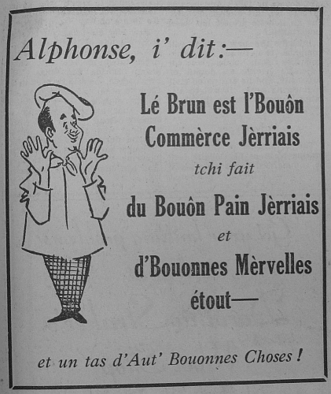

Le Ménage ès Feuvres,
Lé 14 d'octobre, 1972
St. Ouën.
Moussieu l'Rédacteu,

|
Quand nou d'meuthe hors-Jèrri, nou n'trouve janmais tchi' y'a autcheune chose tch'a si bouan goût comme les Mèrvelles. En Améthique, par exempl'ye, i' font des p'tites rondasses tch'il' appellent des "Doughnuts" en Angliais. Eh bein, y'en a tchi sont bouannes, mais j'n'ai pon 'couo veu d'femmes dans l'Nouvieau Monde, à mains tch'i' s'saient Jèrriaises, tchi peuvent faithe autcheune chose si d'licieux comme eune Mèrvelle en Jèrri. Et pis, y'a des Jèrriaises tch'en font tch'ont miyeu goût d'autres, étout. Nouot' couôsinne Mêrrienne Le Feuvre, décédée y'a p't êt' eune tchînzaine d'années à l'âge dé 91 ans, 'tait r'nommées pour sa gâche et ses Mèrvelles dans l'temps qu'ou donnait des thées dans san bel à La Fèrme d'Gros Nez. Sa nièche, Madanme Frank Le Maistre, a héthité l'don d'sa tante, et ses Mèrvelles sont des toutes miyeuthes. Dans san dictionnaithe Jèrriais, sén homme, l'Académicien L'Maistre, nouos dit qu'les touos anciens St. Ouënais appelaient les Mèrvelles des "Parahouettes", mais ch'tait d'vant qué j'fusse né, car jé n'les ai janmais ouïent appeler d'même. Sans doute, j'n'ai pon 'couo ouï tout, et comme un ancien m'dithait: "Tu n'as pon veu la bête tchi t'mang'geas!"
I' n'y a pon d'doute qué les Mèrvelles sont eune spécialité Jèrriaise. Aut'fais, ch'tait rein qu' à Pâques qué nouos anciens les mangeaient, mais à ch't heu y'a des gens tch'en font quâsi toute l'année, car ch'est un gâté tch'est si c'mode à ouffri ès visiteurs, et ch'est vraînment bouan et nouorrissant.
Lé Sieur Le Maistre nouos dit, étout, qu'aut'fais nou l's appelait des "Nouaisoles" ou "Nouôtholes", un mot qu' nou n'ouait pon souvent à ch't heu. Nou l's appelait d'même car la faichon r'sembliait à un noeud.
Un aut' pétit gâté d'aut'fais tch' était tchuit dans d'la graisse et tch'était tchiquechose à rav'nin ès Mèrvelles 'tait des God'nichettes ou God'nitchettes.
Jé n'sai pon comment qu' nouos délicieuses Mèrvelles son v'nues à êt' appelées des "Wonders". S'i' fallait traduithe lé nom, nou-s-éthait pûtót pensé qu' ch'éthait 'té "Marvels". Enfin, les fichus villais ont tellement fait sèrvi l'mot "Wonders" qué hardi d'campangnards tchi n'pâlent pus l'Jèrriais n'savent, dé nouos jours, lé vraie nom. I' faut dithe, étout, qu' un tas d'ches "Wonders", tchi s'vendent en ville n'ont pon l'bouan vièr goût des Mèrvelles faites par les femmes dé vielles fanmiles Jèrriaises dans la campangne. I' sont pûtôt chein qu' les campangnards appellent du paûtchin. En général, nou n'crait pon fort des cheinnes faites "en gros" par les boulangu'thies commèrciales, mais j'peux r'quémander les cheinnes faites par lé Sieur Ouoyamme Amy d'la "Wayside Bakery" à St. Ouën. Il' ont l'vraie goût d'èrva-s-y.
Un aut' bouan fricot Jèrriais est des Bourdélots. Nou n'en vait pon souvent sus la tabl'ye ches jours. Sans doute, les pommes ont presque dispathu, et i'fallait des pommes pour faithe des Bourdélots . Il 'taient faits atout d'la pâte dé pâté et des pommes douoches pûtôt, mais offûche des suthes étout. I' fallait les p'ler et l's env'lopper atout la pâte et les tchuithe au fou. L's anciens faisaient des Bourdélots d'paithes étout tchiquesfais, et i' faisaient des doubl'yes Bourdélots tch'il appelaient des Bourdélots Jeunmieaux.
Et pis y'avait des Danmeplinnes. Il taient faites atout des pommes suthes env'loppées d'pâté étout, mais il' 'taient difféthentes ès Bourdélots, étant tchuites à l'ieau.
L's anciens n'mantchaient pon d'faithe cèrtains fricots pour mangi lé jour des fêtes dé l'églyise. Pour lé Vendredi Saint, ch'tait des Fliottes. Il' taient faites atout d'la flieu et bouoillies dans du lait. I' fallait les laissi mitonner tchiques minnutes et pis les sèrvi caudes. Ou pouvez vais la r'chette dans les Bulletîns d' L'Assembliée d'Jèrriais. Ch'tait des Crêpes pour Mardi Gras. Il' taient faites atout d'la flieu, d's oeufs, d'la corinthe et du chucre. Pour Pâques ch'tait Sinm'né, ouaithe qué dans les touos vièrs temps l's anciens l'mangeaient dans l'Tchithème.
Pour Noué, ch'tait sans doute lé Podîn d'Noué. Lé tout temps pâssé, il tait appelé Lé Podin d'Flieu. I' y'a sans doute pus d'eune èrchette pour lé faithe. A St. Ouën, il' y mettaient du rhonme ou du lait - d'après la r'chette dans les Bulletîns d' L'Assembliée d'Jèrriais. Ma m'mèe y m'ttait d'l'ieau d'vie. Eune fais, au Cannada, man fréthe. Fraînque li jouit eune farce. Oulle en avait deux d'goûts dans eune boutelle pour y mettre, et l'Fraînque viédgit la boutelle et rempliaichi la litcheu auve du thée fraid. Nouot' pouôrre méthe mint l'thée dans san podin et oulle 'tait mârrie quand ou s'en appèrchut en viyant l'ieau d'vie dans eune aut' boutelle, mais v'la tchi n'fit pon d'difféthence dans l'goût du podîn.
La nouôrrituthe du vier temps 'tait simpl'ye, bouanne et solide. Heutheusement, y'a un fricot du temps pâssé tch'est acouo populaithe et qu' j'aime hardi. Ch'est un fricot tch'est bouan pour toutes saisons et touos vents - des Pais au Fou!
Viyiz étout: